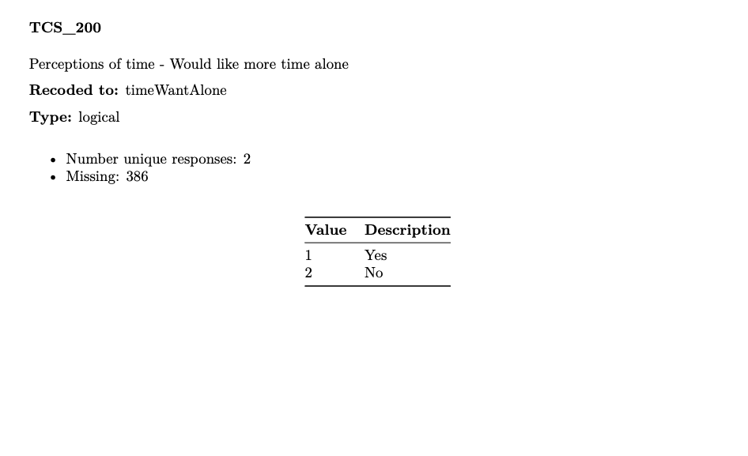
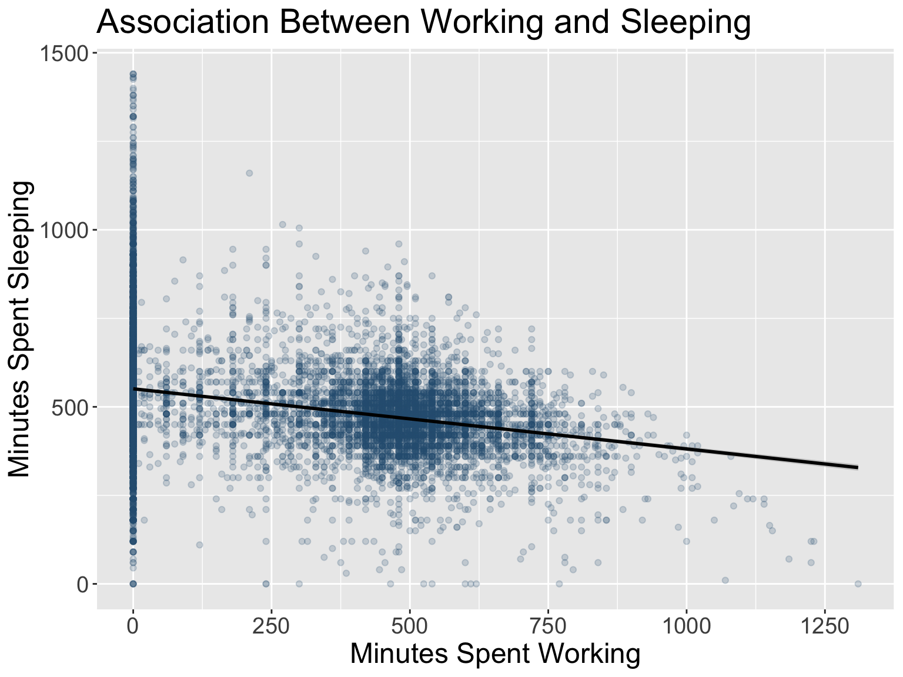

Saving output is a crucial part of responsible research data
management and directly supports the FAIR principles: making data
Findable, Accessible, Interoperable, and Reusable.
FAIR
Saving outputs for reproducible research is all part of supporting
the FAIR principles, making sure your data is findable, accessible,
interoperable, and re-usable.
In this section, we will learn how to save cleaned datasets, update
metadata, export plots, and document our data processing in a
transparent and accessible way. These practices all support
reproducibility and align with the FAIR principles.
library(dplyr) # for data manipulation
library(readr) # for reading and writing data
Saving Datasets
For this section, you can continue from the previous section or load
a backup of the dataset from the resources folder:
load("data/timeuse_block-5_visualization.RData")
The js_data object contains the dataset we used,
transformed, and modified up to now. In this session, we will assume
this is our final dataset to deposit into a repository such as Borealis.
Saving in .csv or .tsv makes sure our files
are open and usable across platforms, easily imported into other
programming languages, databases, or spreadsheet software.
Computational Reproducibility
Using save() to create an .Rdata file is
great for putting together a ‘reproducible package’ because it stores
information related to data types and data structures. For example, it
retains which variables have been converted to factors or dates.
However, it is a file type unique to R; considering that the data may
need to be accessed by non-R users, the data should also be stored in a
more interoperable and accessible format.
In our dataset (js_data), variables like
isFeelRushed (a binary factor: 1 = Yes, 0 = No) or other
categorical variables (e.g., popCenter, or
feelRushed might appear integer-like to read_csv(), which
could misinterpret them as numeric integers instead of factors. Saving
as .RData preserves these R-specific data types (e.g.,
factors, dates, or custom attributes), ensuring consistency when the
data is reloaded in R across different sections of our analysis.
As we have seen, we can save the js_data in
.Rdata format by using the save()
function:
save(js_data, file = "data/timeuse_day4_3.RData")
Interoperability and Reusability
Now, let’s save this dataset into a csv (comma-separated
values) or tsv (tab-separated values) file for sharing or
reuse. Both are plain text files that are
non-proprietary formats promoting
interoperability and
accessibility.
While csv is commonly used (and what we’ve been using),
in many respects tsv is more versatile and enhances
reusability due to:
- csv: Uses commas to separate values, widely
supported but may face issues if data contains commas, which is common
outside of North America.
- tsv: Uses tabs as delimiters, avoiding
comma-related problems and improving readability in text editors or
spreadsheet software.
write_csv(js_data, "data/timeuse_day4_3_20250502.csv")
write_tsv(js_data, "data/timeuse_day4_3_20250502.tsv")
write_csv() and write_tsv() (from the
tidyverse) are fast, UTF-8 CSV writers that by default skip row names.
They also match read_csv() and read_tsv()
(also from the tidyverse) conventions. In contrast, base R’s
write.csv() is slower and by default writes a row-names
column.
While csv and tsv are accessible and
interoperable due to being plain text file formats with simple
delimiters, neither is a standard (this is why there is no single way to
handle the presence of commas in a csv file). There are
other plain text options for storing data that are supported by
standards, such as xml and json, but for
rectangular data, csv and tsv are very simple
options that enhance accessibility to a human reader.
File Compression
One of the disadvantages of plain text file formats such as
csv and tsv is that they are larger than their
software specific, or ‘binary’ counterparts. In fact, if you look at the
data files we’ve saved throughout the week, you’ll notice that the
csv versions are significantly larger. However, depending
on the kind of data one is working with, even software specific formats
can be quite large.
Compression is especially helpful when sharing data through email or
uploading to repositories, enhancing accessibility by
minimizing bandwidth requirements. Even though in this example we’re
working with a relatively small dataset, in real-world scenarios it’s
common to encounter csv files containing millions of rows –
potentially several gigabytes in size. In such cases, compression
becomes not just helpful but essential to efficiently store, transfer,
and share data files, especially when uploading to platforms like OSF or
institutional repositories, such as Borealis.
Here, we’ll use a .gz compression format.
con <- gzfile("data/timeuse_day4_3_20250502.gz", "wb")
write_csv(js_data, con)
gzfile("…", "wb") creates an R connection that writes
directly into a gzip-compressed file, and
write_csv(js_data, con) writes your data frame directly
into that compressed CSV file.
Why use .gz specifically? The .gz format is
widely supported, simple, and natively handled by R through the
gzfile() function. It’s also compatible with most data
repositories and file-sharing platforms. Unlike .zip, which
can hold multiple files, .gz compresses a single file.
Data Dictionaries
To enhance Findability and
Reusability, metadata must be kept up to date. Metadata
provides context about the data – what each variable means, how values
were are, and how data were collected. This makes it easier for others
(including your future self!) to interpret and reuse your data.
One practical way to create and maintain metadata is to use a
data dictionary. A data dictionary is, ideally, a
structured summary that describes each variable in a dataset, including
its name, type, and label or definition.
Human-Readable vs. Machine-Readable
Data dictionaries can be designed as human-readable
or machine-readable, each serving distinct purposes
with specific advantages and limitations. Choosing the appropriate type
depends on your audience, whether it’s researchers reading documentation
or systems processing metadata automatically.
Human-Readable Data Dictionary
- Description: A human-readable data dictionary is
formatted for easy comprehension by people, typically presented as a
table in a spreadsheet (e.g., Excel) or document (e.g., PDF, Word). It
includes plain-language descriptions in natural language (e.g., English)
and is designed to be intuitive for researchers, students, or
non-technical collaborators. For example, a PDF document containing a
table of variable descriptions is human-readable but often not
machine-readable, as it lacks structured data that represents the
relationships present in the dataset
- Example (PDF format): 
Machine-Readable Data Dictionary
Description: A machine-readable data dictionary
uses structured formats like JSON, XML, YAML, or RDF, designed for
software to parse and process automatically without human involvement.
These formats align with metadata standards and are ideal for
integration with data repositories or automated systems, enabling
automatic data feeds and processing.
Example (JSON format):
[
{
"variable": "feelRushed",
"type": "integer",
"description": "Duration - Sleeping, resting, relaxing, sick in bed",
"unique_responses": 274,
"missing": 0,
"count": 17390.0,
"mean": 522.3948246118459,
"std": 133.06481348435142,
"min": 0.0,
"percentile_25": 450.0,
"median": 510.0,
"percentile_75": 585.0,
"max": 1440.0
},
{
"variable": "durSleep",
"type": "factor",
"description": "General time use - Feel rushed",
"unique_responses": 6,
"missing": 62,
"levels": [
{"value": 1.0, "label": "Every day"},
{"value": 2.0, "label": "A few times a week"},
{"value": 3.0, "label": "About once a week"},
{"value": 4.0, "label": "About once a month"},
{"value": 5.0, "label": "Less than once a month"}
{"value": 6.0, "label": "Never"}
]
}
]
Summary Table
| Pros |
Accessibility: Easy to read, supports
reusability for non-technical users.
Ease
of Creation: Manual or CSV export, minimal tools
needed.
Broad Usability: Suits workshops/reports,
enhances accessibility. |
Interoperability: JSON/XML enable
automation, repository integration.
Efficiency:
Programmatic updates reduce errors for large datasets.
Standardization: Metadata standards enhance
findability. |
| Cons |
Limited Automation: Unstructured, hard
to parse, hinders interoperability.
Manual
Maintenance: Manual updates risk errors in large datasets.
Scalability Issues: Inefficient for many variables.
Non-FAIR Compliance: Lacks algorithmic processing,
incompatible with FAIR. |
Technical Barrier: Needs scripting,
challenging for users.
Reduced Accessibility:
Complex without tools.
Format Dependency: JSON/XML
may lack universal support.
Learning Curve:
Structured formats hard for new users. |
The human-readable PDF dictionary provided in the workshop is ideal
for learning and quick reference. For long-term storage or submission to
repositories like OSF or Borealis, convert it to a machine-readable
format to maximize Interoperability and
Findability
Saving Plots
Exporting plots in multiple formats ensures your visualizations are
reusable and accessible for different
purposes: publication, presentation, or web display.
Let’s first again generate the scatterplot to show the association
between sleep and work duration from previous section.
library(ggplot2)
p <- ggplot(js_data, aes(durWork, durSleep)) +
geom_point(color = "#2D5E7F", alpha = .2) +
geom_smooth(method = lm, color = "black") +
xlab("Minutes Spent Working") +
ylab ("Minutes Spent Sleeping") +
scale_x_continuous(breaks = seq(0, 1500, 250)) +
labs(title = "Association Between Working and Sleeping") +
theme(text = element_text(size = 18))
p

PNG
ggsave(
filename = "outputs/association_sleep_working_day4.png",
plot = p,
width = 8,
height = 6,
dpi = 300
)
ggsave() is a ggplot2 function that saves
your last (or specified) plot to a file, automatically picking the
correct format from the filename extension and letting you set size and
resolution.
This format is suitable for web use or slide presentations. PNG is a
raster format that offers high quality and is widely supported across
platforms.
PDF
ggsave(
filename = "outputs/association_sleep_working_day4.pdf",
plot = p,
width = 8,
height = 6)
PDF files preserve vector graphics, which means your plot can be
resized without losing quality. This is especially useful for embedding
in academic papers or generating printer-friendly outputs.
TIFF (Cairo on macOS)
ggsave(
filename = "outputs/association_sleep_working_day4.tiff",
plot = p,
width = 8,
height = 6,
dpi = 600,
device = "tiff"
)
TIFF is often requested by academic journals for its high
resolution.
Saving plots in appropriate formats facilitates sharing and
integration in different dissemination workflows.
Documenting Changes
One of the most important pieces of RDM is documentation and a key
piece of documentation is the process of decision making in how one
works through their data whether that be in the cleaning or analysis
stage of the process. As such, you should use your RMarkdown file as a
living logbook. Write clear descriptions of how your data has been
transformed, which variables have been changed, removed, or created.
This documentation improves transparency, promotes
reusability.
Example explanation:
“We filtered the dataset to include only respondents who feel rushed
at least once a week (feelRushed <= 3), and retained
only time-use columns for analysis.”
Remember that we can create the rushed and
not_rushed data frames by filtering
isFeelRushed == 1 for rushed participants and
isFeelRushed == 0 for those who are not rushed.
rushed <- js_data |>
filter(isFeelRushed == 1)
not_rushed <- js_data |>
filter(isFeelRushed == 0)
And then, you can also track changes quantitatively:
summary_changes <- data.frame(
Step = c("Original rows", "Filtered for isFeelRushed == 1", "Final rows"),
Count = c(nrow(js_data), sum(js_data$isFeelRushed == 1, na.rm = TRUE), nrow(rushed))
)
summary_changes
## Step Count
## 1 Original rows 17390
## 2 Filtered for isFeelRushed == 1 12689
## 3 Final rows 12689
Such logs help other researchers understand your workflow and
replicate or build upon your analysis.
Saving Documents to PDF
Once you’ve saved individual datasets and plots, you’ll often want to
bundle your entire analysis – code, text, figures, and tables –
into a single file. You can export your RMarkdown document as a
PDF for a polished, human-readable output or as
HTML for a dynamic, web-friendly format. Each format
has distinct advantages and limitations, depending on your needs.
| Pros |
- Human-readable.
- Universally accessible.
-
Consistent formatting.
- Ideal for formal distribution (e.g.,
publications, reports). |
- Machine-readable.
- Supports interactivity (e.g.,
collapsible code).
- Web-friendly.
- Smaller file sizes. |
| Cons |
- Not machine-readable.
- Lacks interactivity.
- Large file sizes.
- Limited for web-based sharing. |
- Requires web browser or specific software.
- Less
consistent formatting across devices.
- May need technical setup for
sharing. |
In this section, we can practice to export our RMarkdown document as
either PDF or HTML.
Update your YAML
At the very top of your .Rmd file, ensure you have a
YAML header supporting both PDF and HTML outputs:
---
title: "RDM Jumpstart Workshop"
author: "Your Name"
date: "2025-08-12"
output:
pdf_document:
toc: true # optional: include table of contents
number_sections: true # optional: number your sections
html_document:
toc: true # optional: include table of contents
code_folding: show # optional: toggle code visibility
code_download: true # optional: allow downloading .Rmd
---
This tells RMarkdown and Pandoc to produce either a PDF via LaTeX or
an HTML file, depending on your knitting choice.
Install TinyTex
R Markdown relies on LaTeX under the hood. We recommend TinyTeX as a
simple solution. TinyTeX is lightweight and will automatically pull in
any missing LaTeX packages as you knit.
install.packages("tinytex")
tinytex::install_tinytex()
Knit
In RStudio:
- PDF: Click the arrow next to Knit and choose Knit to PDF
(or simply hit Knit if PDF is your default).
- HTML: Choose Knit to HTML for a web-friendly output with
interactive features.
Summary
| Compression |
Use .csv.gz or .tsv.gz for
large files to reduce size and improve access speed. |
| Interoperability |
Prefer .csv, .tsv; avoid
locked-in formats to maximize cross-platform use. |
| Naming Conventions |
Use descriptive names with dates/versions:
timeuse_day4_3_20250502.csv. |
| Transparency |
Log all changes in RMarkdown; describe decisions in
plain language. |
| Metadata |
Maintain and save an updated data dictionary in
human-readable (e.g., PDF) or machine-readable (e.g., JSON) formats with
rich, structured metadata, enhancing Findability and
Interoperability. |
| Plot Formats |
Use appropriate formats (.png,
.pdf, .tiff) based on audience/platform. |
| Licensing |
Apply open licenses (e.g., Creative Commons) to enable
legal data reuse. |
Your Turn
Scenario 1: You’re preparing to share your fully
cleaned dataset so that collaborators using Python, SPSS, or Excel can
easily load it. Which file format would you choose .csv or
.Rdata to maximize interoperability and
why?
Scenario 2: You’ve created a human-readable data
dictionary in PDF format, describing newly created variables like
isFeelRushed. A collaborator needs a machine-readable
version, such as JSON, to share it with a data repository. Why would you
choose JSON over PDF for this purpose, and how does this support
findability and interoperability?
Scenario 3: You’ve just created a
publication-quality ggplot showing the relationship between work time
and sleep. For web sharing and for submission to an academic journal,
which file formats would you export (PNG, PDF, TIFF) and why?
Scenario 4: You need to share your RMarkdown
analysis with both a journal (requiring a formal report) and an online
community (preferring interactive content). Which output formats (PDF or
HTML) would you choose for each, and how do these choices support
accessibility and reusability?
Challenge 1: Revisit your RMarkdown now and improve
the documentation of one of your data-cleaning, or data-transformation
steps. Imagine you (or a colleague who are not familiar with the
project) come back to this 6 months from now: will they understand
exactly what you did and why?
Challenge 2: Save all the plots you created in the
visualization section using ggsave(). For each plot, choose
an appropriate file format (e.g., PNG for web, PDF for papers, TIFF for
high-res), create a descriptive file name that includes the date and
plot type, and write the exact ggsave() command you would
use.
Wrap-Up
Following these practices ensures your research outputs are
understandable, reusable, and verifiable. Saving data, metadata, and
visuals properly helps you, your collaborators, and future researchers
reproduce and extend your work. More importantly, it aligns your
workflow with the FAIR principles,making your research more open,
ethical, and impactful.
Remember: every saved dataset, every labeled plot, and every comment
in your RMarkdown is a contribution toward a more FAIR research
ecosystem.
